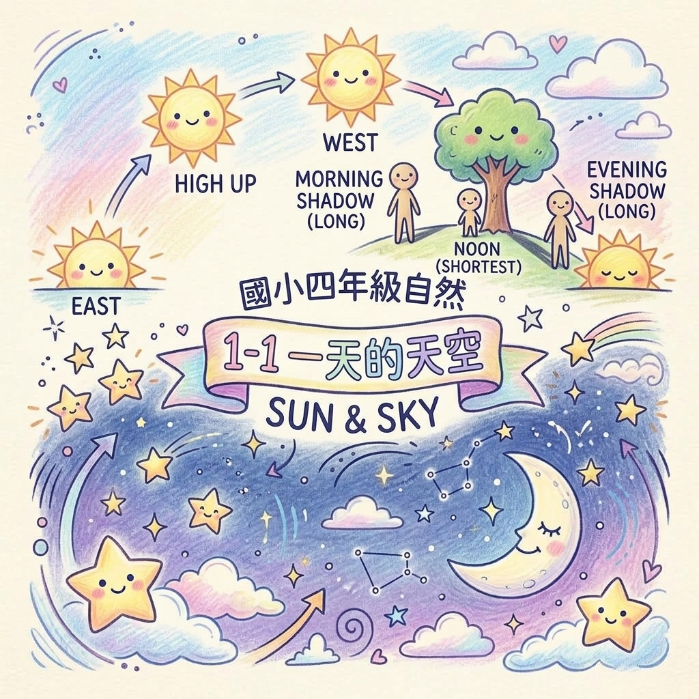

第 1 張
✨ 1-1 一天的天空 ☀️
自然四上 ‧ 太陽與影子 ‧ 白天與夜空
太陽在一天中的移動路徑
- 早上 (約 8:00)：太陽從東方升起，仰角較低。
- 中午 (約 12:00)：太陽在頭頂正上方偏南，仰角最高。
- 下午 (約 16:00)：太陽往西方落下，仰角再次變低。
- 重要結論：太陽在一天中的移動方向是「由東向西」！
太陽與影子的黃金相反定律
- 方向永遠相反：
早上太陽在東 ➔ 影子在 西方
下午太陽在西 ➔ 影子在 東方 - 影長與高度相反：
太陽位置越高 ➔ 地上影子 越短
太陽位置越低 ➔ 地上影子 越長 - 中午 12:00：影子在腳下「最短」！
白天與夜空的天體探索
- 白天天空：陽光極強烈，⚠️絕對禁止用肉眼直視太陽（會灼傷眼睛！可透過觀察影子得知太陽位置）。天氣好時偶爾可見淡白色月亮。
- 夜晚天空：太陽落下後天色變暗，月亮與星星閃閃發光。
- 最佳觀星條件：雲量少、光害少、空曠安全的地點。
📌
💡 可愛記憶口訣
🌟「太陽東升向西落，影子西移向東走；
太陽高高頭頂照，地上影子縮最短！」
太陽高高頭頂照，地上影子縮最短！」
🛡️ 易錯迷思避雷針
❌ 中午 12 點太陽在頭頂，物體完全沒有影子？
✔️ 正解：在臺灣地區，正中午時太陽依然會有些微角度或在正上方，物體下方依然有「最短」的影子。
✔️ 正解：在臺灣地區，正中午時太陽依然會有些微角度或在正上方，物體下方依然有「最短」的影子。
❌ 白天絕對看不到月亮？
✔️ 正解：農曆初七、八之後或滿月前後的白天，天氣晴朗時常能在天空中清楚看見月亮！
✔️ 正解：農曆初七、八之後或滿月前後的白天，天氣晴朗時常能在天空中清楚看見月亮！
⭐ 隨堂快問快答：早上上學時面向校門口（南方），太陽在左手邊（東方），校門口的樹影會偏向哪一方？
🎉 解答：西方（右手邊）！因為太陽與影子的方向「永遠相反」，早上太陽在東方，影子必定指向西方！